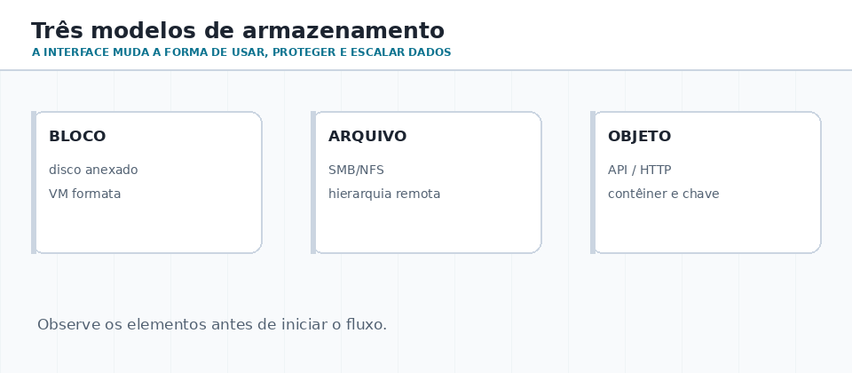
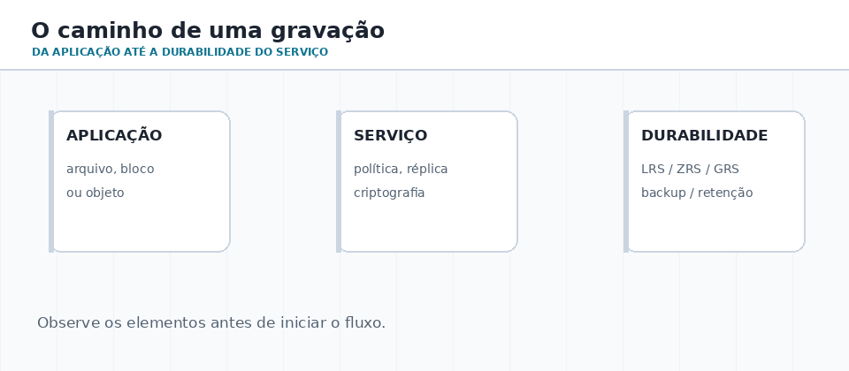
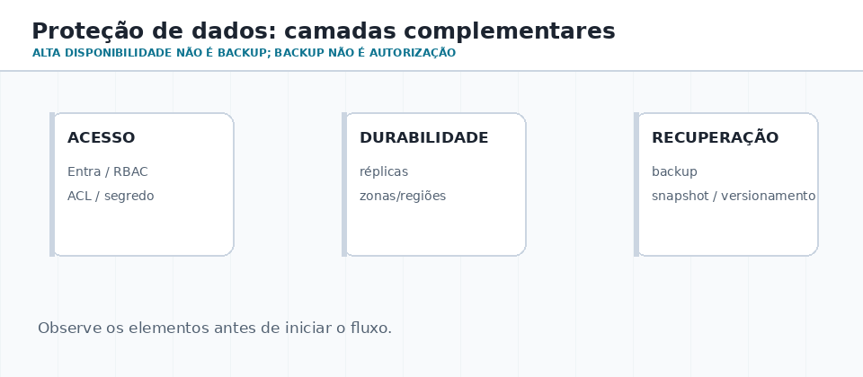

Modelos de armazenamento
Entenda bloco, arquivo e objeto; não comece pelo nome do serviço.
AULA 08 · APROX. 65–85 MINUTOS
Disco virtual, pasta compartilhada e objeto em bucket podem armazenar bytes. O que muda é a interface, a semântica, a forma de escalar, o controle de acesso e o plano de recuperação.
01 · ROTEIRO DE ESTUDO
Entenda bloco, arquivo e objeto; não comece pelo nome do serviço.
Relacione interface, consistência, metadados, acesso e escala.
Diferencie durabilidade, disponibilidade, backup, versões e retenção.
02 · TRÊS ABSTRAÇÕES
Uma máquina virtual espera que um disco se comporte como bloco. Pessoas e aplicações legadas frequentemente precisam de arquivos em uma pasta montada. Uma aplicação web, por outro lado, pode escalar melhor quando trabalha com objetos identificados por chave e metadados.

| Modelo | Interface | Exemplo de uso | Serviço Azure |
|---|---|---|---|
| Bloco | disco anexado ao SO | VM, banco de dados, sistema de arquivos próprio | Managed Disks |
| Arquivo | pasta e arquivos SMB/NFS | compartilhamento departamental, lift-and-shift | Azure Files |
| Objeto | API/URL, chave e metadados | imagens, backup, logs, dados analíticos | Blob Storage |
Blob não é uma pasta de rede montada por padrão. Ele pode ter nomes com barras, mas a aplicação deve tratar o modelo como armazenamento de objetos.
03 · CAMINHO DE UMA GRAVAÇÃO

O melhor serviço é aquele cujo contrato reduz adaptação indevida. Uma aplicação que precisa bloquear trechos de um disco não deveria simular isso sobre objetos; uma galeria de imagens não precisa expor um compartilhamento SMB a toda a internet.
Quem consome? Há POSIX/SMB? O dado é transacional? Precisa de milhares de objetos? Como autentica? Qual é o RPO e RTO esperados?
04 · INTERAÇÃO
05 · PROTEÇÃO E RECUPERAÇÃO
Uma plataforma pode replicar dados para lidar com falhas físicas e ainda assim não proteger contra exclusão acidental, corrupção lógica ou ataque com credencial comprometida. Por isso, proteção tem camadas e metas mensuráveis.

Replica dados para reduzir perda causada por falha física, conforme o nível contratado.
Trata da capacidade de atender durante falhas e manutenção; não é sinônimo de backup.
Protege contra exclusão e alterações lógicas. Retenção e imutabilidade podem ser necessárias.
RPO define quanta perda de dados é aceitável; RTO define o tempo aceitável para restaurar o serviço. Eles orientam a arquitetura mais do que uma lista de recursos.
06 · LABORATÓRIO DE OBSERVAÇÃO
df -h df -T du -sh ~ findmnt -T ~
Get-Volume Get-PSDrive -PSProvider FileSystem Get-ChildItem $env:USERPROFILE | Measure-Object -Property Length -Sum
az account show
az storage account list --query "[].{nome:name,grupo:resourceGroup}" -o table07 · VERIFICAÇÃO
Qual escolha é mais coerente para imagens de um portal com grande escala?
08 · DESAFIO FINAL · 30–40 MIN
O campus possui: documentos administrativos compartilhados; disco de VMs de laboratório; vídeos das disciplinas; banco de dados de um sistema acadêmico; cópias anuais de retenção longa. Para cada item, selecione bloco, arquivo ou objeto; defina a identidade principal; escreva um risco de perda lógica e uma medida de recuperação.
Entregável sugerido: uma tabela com cinco linhas, uma justificativa curta por linha e RPO/RTO aproximados. Evite justificar apenas com “é o mais usado”.